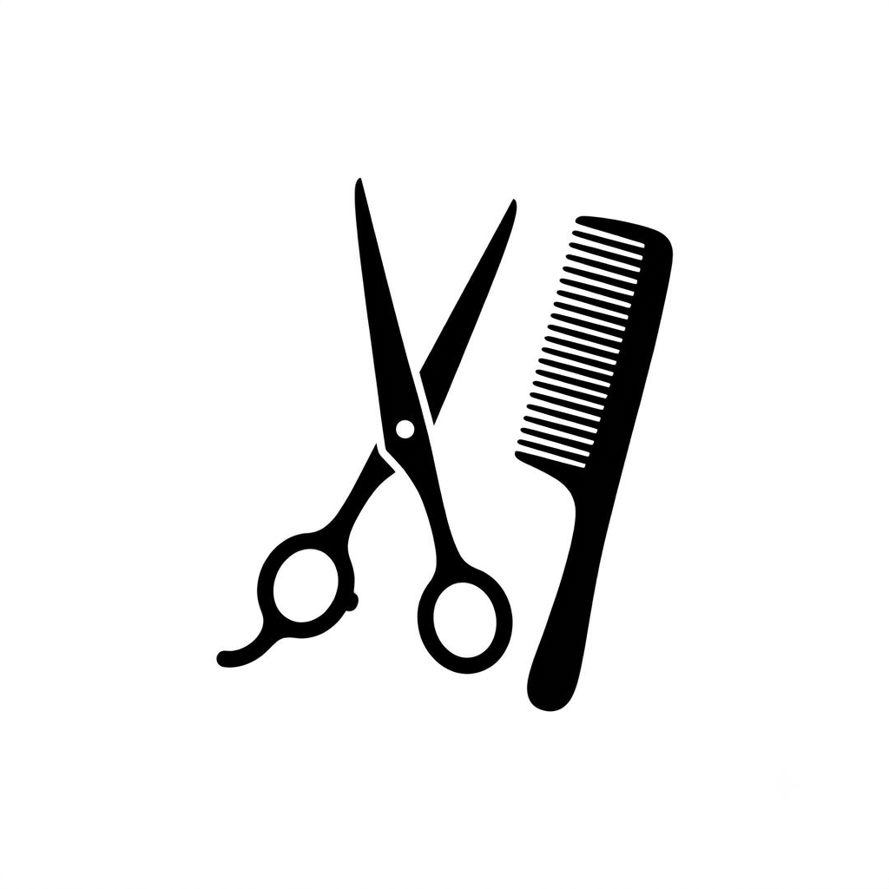

Bem-vindas ao meu blog de cabelos!
Por: Isabelly Pereira
Neste primeiro post, quero compartilhar minha paixão por cabelos e o que vocês podem esperar por aqui: dicas de hidratação, os melhores cortes para cada tipo de rosto e muito mais!